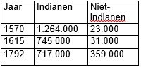

Huiswerk H2 'Ontdekkingsreizen'
- De Portugezen gaan als eerste land in Europa op ontdekkingsreizen. Geef vier redenen waarom.
- Veel Portugezen ontdekkingsreizigers gingen in de 15e eeuw op pad. Velen ontdekten zeeroutes naar landen in Azië. Welke landen of gebieden werden ontdekt door deze vier ontdekkingreizigers: Afonso de Albuquerque, Antonio de Faria, Francisco Serrão, Bartolomeu Dias.
- In deze tabel kun je zien hoe de bevolkingsaantallen van het latere Peru (Zuid-Amerika) zich ontwikkelden in de penode 1570-1792. Geef aan welk gevolg of welke gevolgen van de ontdekkingsreizen je in de tabel herkent.
- Een van de beroemdste ontdekkingsreizigers is Christoffel Columbus. Uit welk land kwam hij?
- Columbus is bekend voor zijn ontdekking van Amerika. Hij wilde deze laten sponsoren door de Portugeese koning maar die wees het plan af. Waarom?
- Hij vroeg het ook aan de Spaanse koning, die wees het in 1484 af omdat hij het te druk had met iets anders. Waarmee?
- Columbus ondernam vier reizen. Beschrijf wat het doel was van elke reis.
- Na het succes van Spanje en Portugal volgde velen andere Europese landen, waaronder Nederland. Beschrijf wat de volgende Nederlandse ontdekkingreizigers hebben ontdekt of geprobeerd te ontdekken: Willem Barentsz, Henry Hudson, Jacob Roggeveen, Hendrick Hamel, Samuel van der Putte
